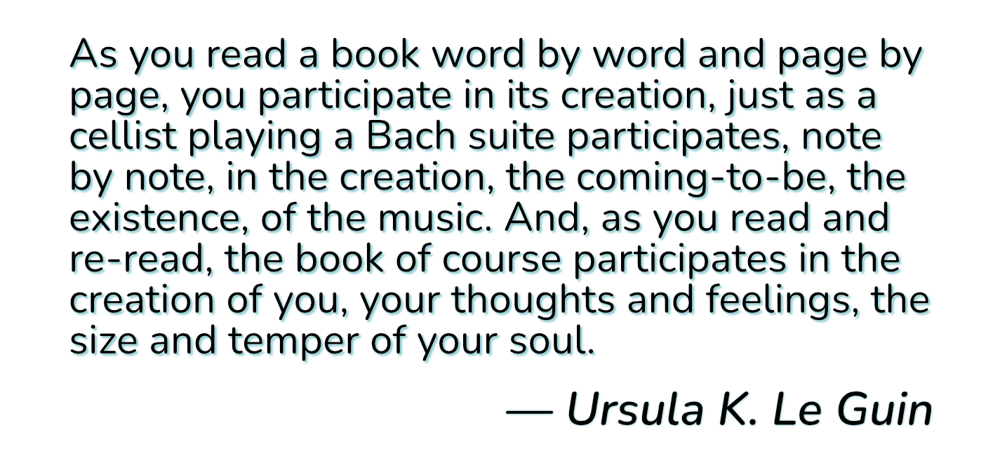
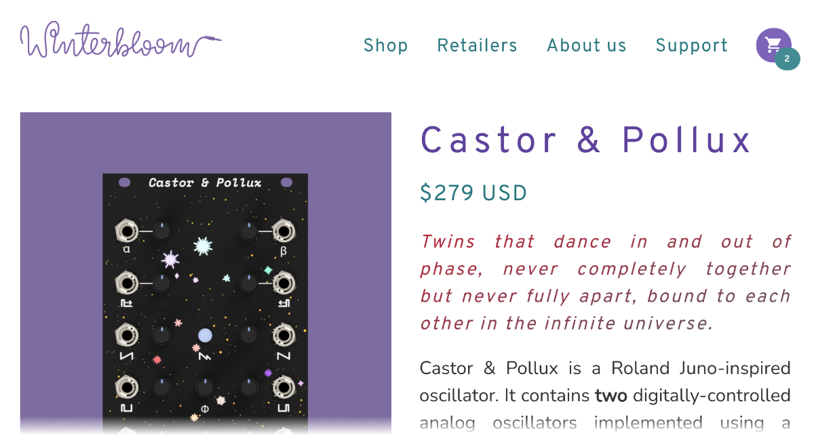

A few of my favorite typefaces
Ah, typefaces. They're ubiquitous in our modern, digital world. Digital type has evolved from the early, necessarily simple bitmap fonts of the Commodore 64 and IBM PC to incredibly expressive vector illustrated typefaces we use today. Unless you take the time to journal by hand or you're lucky enough to have someone send you a hand-written letter, you're almost always reading through the lens of a typeface.
Back in the days of handwriting, a person's hand gave way to a unique and personal lettering style. These days we use different typefaces to give our words that layer of context, meaning, intent, and style. The connotations that typefaces carry are so powerful that it's no wonder that people have strong reactions to certain typefaces- poor Comic Sans.
As a designer, I try to be very deliberate in the fonts that I use. Picking the right font is just as it's important as picking the right colors, composition, layout, spacing etc. This article talks about a few of the typefaces I use and why I love them.
Nunito

Nunito is a lovely typeface created by Vernon Adams. I love it for its friendly rounded terminals1 - it's a serif typeface that doesn't feel overly formal or stuffy. You might notice that this is the font used throughout this blog! While intended to be used as a display typography2, I think it works quite well for text especially with the great legibility of the regular, regular italic, and bold styles - perfect for a blog.
Nunito is a free and open source typeface and is available on Google Fonts and the source is available on GitHub.
For the serif-averse, there's also Nunito Sans, although I think it loses some of the character of the serif typeface.
IBM Plex Mono

IBM Plex Mono is an incredible monospace typeface from IBM and Bold Monday. It is just one of the typefaces in the IBM Plex superfamily. In my opinion, it's the best member of that family. It's directly inspired by the IBM Selectric typewriter which gives it an immediately classic and physical quality. The italic style is absolutely gorgeous with just the right amount of slant and its pointed serifs. This is the font I use for my text editor as well as for the embedded code examples in this blog and Winterbloom's documentation.
It might seem strange to feel so fondly of a big scary corporation's typeface, but I believe that IBM has done an incredible job with this typeface and it's free & open source. You can get the font at Google Fonts and check out the source on GitHub.
Space Mono

Space Mono is another monospace typeface that I adore. It was created by Colophon - a UK-based foundry with lots of wonderful typefaces (seriously, go check them out!) What makes Space Mono unique and wonderful is that unlike most monospace fonts, it is not designed for readability - it's a display font made to be used as the center of attention. The creation of Space Mono was inspired by speculative fiction and it shows. It evokes the bold, glowing light of a monitor screaming status reports at the crew of a spacecraft. It has a true digital heritage, seperating it from the more physically influenced typefaces like IBM Plex Mono.
In my opinion, the bold, italic font is by far the most evocative. We use this font for the product names on Winterbloom's front panels. A tradition that started with Castor & Pollux and continues as we name our modules with space & sci-fi inspired names.

Space Mono is a free and open source typeface and is available on Google Fonts and the source is available on GitHub.
A related and similarly beautiful font with proportional and monspace variants, Basis, is available as a commercial typeface.
Overpass

Overpass is a typeface that is deeply true to its namesake. It was commissioned by Red Hat and designed by Delve Fonts based on the lettering used on US highway signs. Overpass extends the utility of its reference font by optimizing for screen and print use and adding a dozen weights and styles. I love typefaces like this that are deeply rooted in real-world usage and constraints. Because of its origins it has a immediately familiar, official, and legible appearance.
Perhaps surprisingly, this is Winterbloom's primary typeface. It stands in contrast to Winterbloom's playful, squiggly logotype and is displayed in lighter weights and in welcoming hues of purple and teal- effectively subverting the original context of the typeface.
Overpass is a free and open source typeface and is available on Google Fonts and directly from Red Hat. The source is available on GitHub.
By the way, Overpass was commissioned to be a replacement for the commercial Interstate typeface designed by Tobias Frere-Jones. If you're a big nerd about typefaces used for all manner of public signage, take a look at the list on Wikipedia.
Honorable mentions: The National Park typeface that is inspired by the router-cut signs found in US National Parks, and Colophon's Pantograph typeface inspired by its namesake machine.
ITC Avant Garde Gothic

ITC Avant Garde Gothic is a typeface originally designed in 1970 by Herb Lubalin of the International Typeface Corporation, one of the first digital typeface foundries. A typeface with 50 years of history has shown up in all sorts of contexts- from the 1971 PBS logo to the title sequence of Netflix's sci-fi horror Stranger Things. It's an incredibly strong, legible, and bureaucratic-looking typeface that works incredibly well when subverted and used in the context of science fiction and horror. No where is this more apparent than in Remedy's Control where it's used to complement the brutalist architecture that belies the paranormal nature of the game's setting, The Oldest House.
ITC Avant Garde Gothic is a commercial typeface and can be purchased from MyFonts. If you don't need all of the weights and obliques, TeX Gyre Adventor is a free and open-source alternative.
Learning Curve

Learning Curve is a delightful cursive typeface by Jess Latham that's inspired by the cursive handwriting posters and worksheets used by teachers for decades. I love it because of its roots in education- it's clean and legible but not boring. It echoes back to grade school days and has a distinct playful feel. You might recognize it from Untitled Goose Game where it's used for the horrible goose's hand(wing?)-written list of awful things to do.
Learning Curve is a free typeface and you can get it directly from the designer. Jess Latham has made several of his typefaces freely available but I highly recommend checking out his paid typefaces as well. Supporting independent designers is always a good idea.
Also, Print Clearly is a complementary print font.
Brevia

Brevia is a brushed, casual sans serif display typeface by HvD. It's one of my absolute favorites to use for larger, eye-catching typography. It's bold and friendly in the heavier weights. We used this typeface for PyCascades to great effect. While the foundry suggests that Brevia could be used for text, I find it somewhat odd in that context, especially if its used for display in the same design. You could try pairing with Pluto Sans.
Brevia is a commercial typeface and you can purchase it directly from HvD.
More
Not satisfied? Want more cool typefaces? Check out my thread on Twitter where I asked folks what their personal favorites are. There's lots of wonderful typefaces in that thread!
-
The end of the "stroke" for a character. read more about the anatomy of a character. ↩
-
Which means it's intended for larger uses like headlines, posters, logotypes, etc. - basically, anything but dense body text. ↩